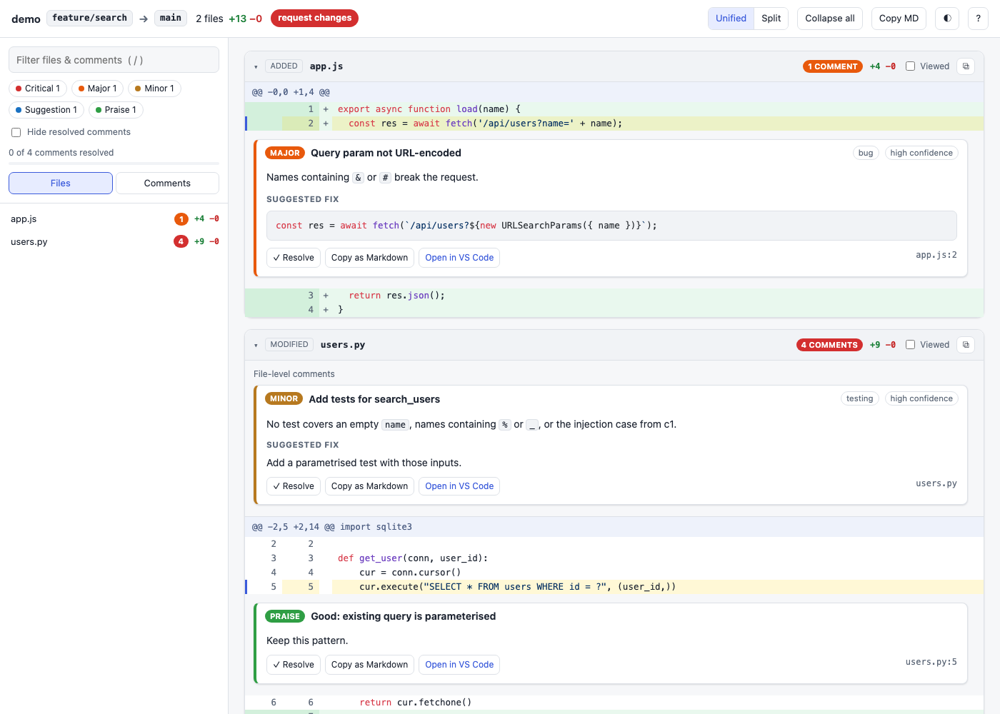
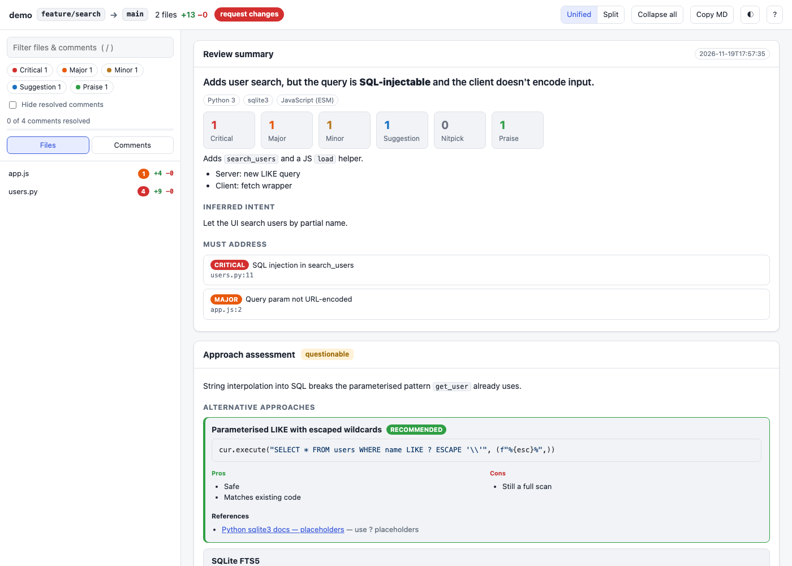

Run /code-review to review only your branch's changes, a file, or the code you've highlighted, in any tech stack. It validates the approach, suggests better alternatives backed by official docs, checks git history to see why the code exists, and opens an interactive diff with the review inline.
/plugin install code-review --marketplace rewin0087/claude-code-review/code-review:code-review. On versions older than 2.1.275, run /plugin marketplace add rewin0087/claude-code-review, then /plugin install code-review@rewin0087.git clone https://github.com/rewin0087/claude-code-review.git ~/.claude/skills/code-review/code-review in any repo. Update with git -C ~/.claude/skills/code-review pull.
Every finding sits on its diff line, with the reasoning, a suggested fix, alternatives and references.
More than a linter. It judges whether the approach is right, explains why with sources, and shows a better way.
Diffs from the merge-base, so commits that landed on main after you branched are left out. The base branch is detected automatically.
Highlight code in VS Code and run it, or pass app.py:40-80, folders or globs. Unchanged code is reviewed as it is.
Rates the solution from sound to flawed, then proposes alternatives with pros, cons and a recommendation.
Major findings cite official docs, OWASP/CWE, RFCs or open-source code. It only cites links it opened, and your code never goes into a search.
Blames the lines you change and finds past fixes, reverts and workarounds, so a cleanup doesn't bring an old bug back.
Detects languages, frameworks and versions from your files and manifests, and fits its advice to the versions you use.
Unified or split diff, filters, search, resolve tracking, Open in VS Code, commit links, keyboard shortcuts and dark mode.
A verdict, the approach rating and a table of every finding, with a link to the full report and Copy as Markdown for your PR.
Runs in the Claude Code session you already use, in the terminal, VS Code or JetBrains. No API key, server or CI.
Scripts handle the exact parts: diffs, line numbers, commits and rendering. Claude handles the judgement. Every line and commit the review cites is checked against the real repo.
Run /code-review on a branch, paths, line ranges or your editor selection, with optional flags.
Finds the base, diffs from the merge-base, and narrows to your scope.
ScriptReads full files, callers and tests. Checks git history, runs the checklist, judges the approach and researches sources.
ClaudeRejects comments on lines that aren't in the diff and commits that don't exist, then renders the report.
ScriptA verdict and findings in the chat, plus the interactive report. Fix, resolve, then copy to your PR.
YouPlugin installs use /code-review:code-review. Standalone installs use /code-review.
# the checked-out branch against its auto-detected base /code-review # another branch, without checking it out /code-review --head feat/login # a file, a line range, folders and globs /code-review src/billing/charge.ts:40-80 src/api/ 'src/**/*.sql' # the code highlighted in VS Code / JetBrains /code-review --selection # dig into git history to see why the code is the way it is /code-review --history # put more weight on one area /code-review --focus security

No. It runs inside your existing Claude Code session in the terminal, VS Code or JetBrains, with local Python scripts and git.
Any. It detects the stack and framework versions from your files and manifests (package.json, Gemfile, go.mod, pyproject.toml, …) and fits its advice to those versions.
No. By default it reviews only the changes your branch introduces since it split from its base branch. You can also point it at a file, a line range, a folder, or the code highlighted in your editor.
No. Web searches use generic technical terms only. Your code, names, secrets and hostnames never go into a search query.
/code-review:code-review?Claude Code namespaces plugin commands as plugin:skill. To type plain /code-review, install it as a standalone skill by cloning it into ~/.claude/skills/code-review.
To .code-review/<branch>/report.html in your repo. That folder is added to the repo's local .git/info/exclude, so it never gets committed.